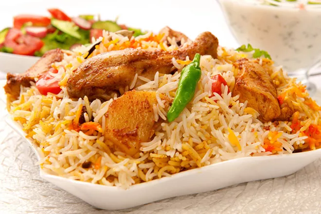

Chicken Biryani

Description
Everyone like to eat different types of rice recipes with different taste. Here, we will tell you about a rice recipe known as a Chicken Biryani Recipe. This recipe is made from boiled white rice, chicken and other healthy ingredients. This recipe is famous in South Asian countries like Pakistan, India, and Bangladesh. People like to eat this recipe with raita or Yogurt etc. This recipe is famous with different names Hyderabadi Biryani, Bombay Biryani, and other different names. You can cook this recipe within 40 to 50 minutes.
Ingredients
- 2.5 pounds chicken
- 1.5 pounds White boiled rice
- 1 cup water
- 1 cup cooking oil
- 1 teaspoon garlic and ginger paste
- 1/2 teaspoon salt
- 2 teaspoons Red pepper
- 4 teaspoons Biryani masala
- 2 bay leafs
- 2 chopped red onions
Steps
- Cooking Directions for Red onions
- Take a wok and add half cup of oil over medium-high heat
- Add half cup of chopped onions in heated oil
- Cook them until dark brown color
- Put Out them in a bowl after fry
- Cooking Directions for chicken
- Put half cup of in a large wok over medium-high heat
- Now add 4tb spoon biryani masala and garlic paste in oil
- Add salt, red, and black pepper
- Add bay leaf and half cup of water and cook them for 5 to 10 minutes
- Now add chicken and half cup of water and mix these ingredients and cook them well 20 minutes
- During cooking of chicken make normal gravy for biryani recipe
- Cooking Directions for Biryani
- After cooking the chicken with gravy Now Add boiled rice on chicken
- Cover them for 10 minutes over Low-medium heat
- After 10 minutes Now mix them well that all ingredients mix with each other
- You can also add some pickle for spicy taste and mix with biryani
You can serve this recipe with raita and salad and for more taste, you can add some pickle. People of South Asian countries like to eat this recipe with spicy taste and other ingredients. In Hyderabadi biryani recipe, fried potatoes are used with chicken for extra flavor.